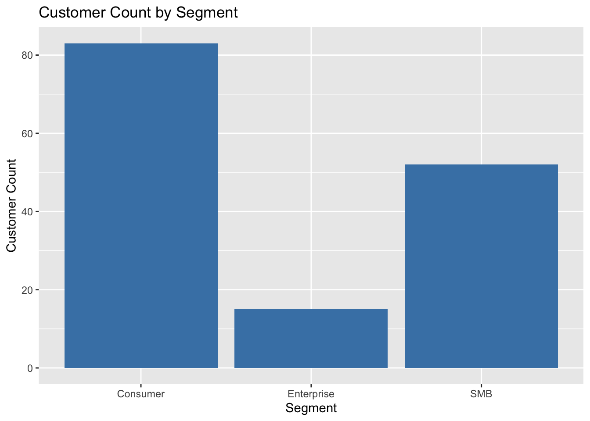
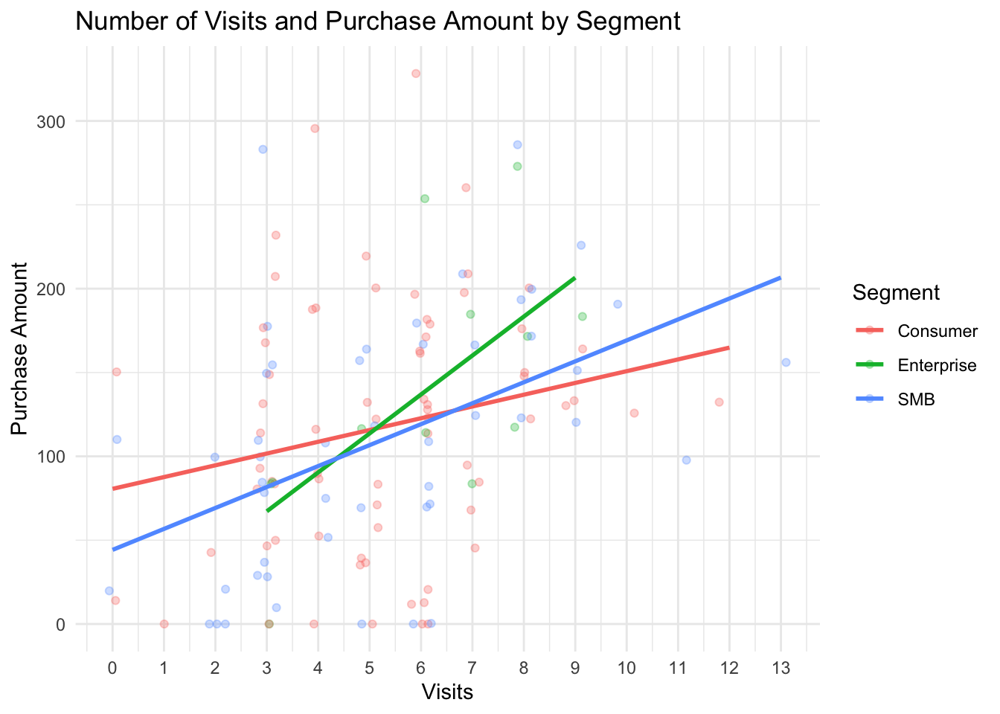
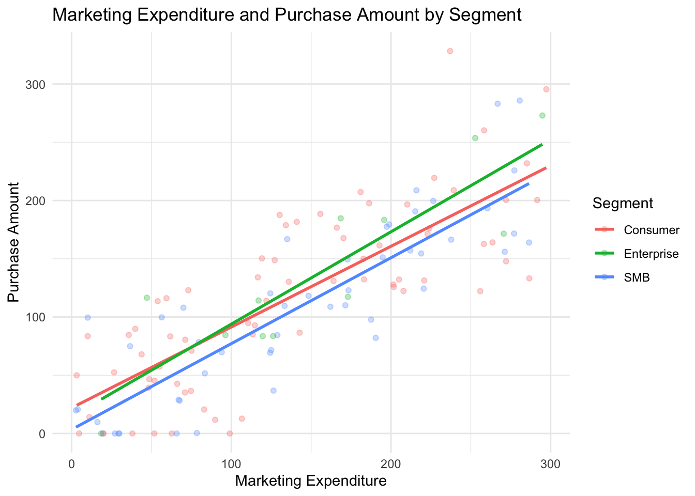

| segment | total_customers | median_marketing_spend | median_purchase_amount | median_visits | missing_purchases |
|---|---|---|---|---|---|
| Consumer | 83 | 127.18 | 123.00 | 5 | 12 |
| Enterprise | 15 | 133.09 | 116.94 | 7 | 3 |
| SMB | 52 | 155.21 | 108.80 | 5 | 3 |
ETC5513 - Assignment 1
Introduction
The data used in this report can aid us in understanding where to focus marketing efforts by showing what actually drives purchasing behaviour. To optimise purchasing outcomes relative to marketing expenditure, it is essential to quantify the relationship between marketing_spend, purchase_amount, and customer engagement (visits). Key patterns will be summarised using visualisations and tables in order to support interpretation. Therefore, this report will be presented as a reproducible document which aims to support the research question.
Research Question
In essence, the data presents us with three possible relationships to be investigated which can be summarised as one research question: How do marketing_spend, and customer engagement (visits) relate to purchase_amount, and does this relationship vary between different customer segments?
Dataset Introduction
Investigation shows that the data consists of customer records that assign each individual their own unique customer_id. Each customer has their marketing_spend (marketing expenditure), purchase_amount, segment, signup_date, notes on interactions and number of visits (engagement count) recorded. The segment variable splits customers into three different groups which allows for comparison: Consumer, SMB and Enterprise. The signup_date and notes variables, while not relevant to this report, indicate when a customer signed up and some simple notes about interactions with each customer respectively. To summarise, the dataset contains information on how marketing and engagement relate to purchasing behaviour amongst individuals.
Cleaning Process Summary
In order to clean the dataset, the following process was implemented:
The data was thoroughly inspected using functions such as
head(),glimpse(),str(),names(),nrow(),ncol(),unique(), andtable()to understand the structure of the data and identify any duplicates or inconsistencies.From this, notes and signup_date were found to be inconsistent and needed to be cleaned, while visits, not necessarily needing to be altered, would be smoother if changed from numeric to integer.
The following steps were saved into a new dataset called
cleaned_datasetto ensure that the original data was preserved and could be referred back to if needed:notes were cleaned by standardising the entries to NA where they were previously recorded as a mix of “N/A” and the expected NA. This was done using the
na_if()function.signup_date was cleaned by standardising the date format using the
parse_date_time()function from the lubridate package. It allowed for multiple formats to be parsed and converted to a consistent date format. There were around 3 entries that couldn’t be parsed but were left as is since the variable isn’t a category of interest.visits were converted from numeric to integer using
as.integer(). This was done to ensure that the data type properly reflected the nature of the variable.
Dataset Description
The dataset has a total of 150 observations and 7 variables. Variable types include:
- numeric : marketing_spend and purchase_amount
- integer : visits
- character : customer_id, segment, and notes
- Date : signup_date

Results


Explanation
There were 150 total rows in the dataset, but only 132 were used in the analysis. This was because the rows with missing purchase amounts were excluded. Figure 2 shows that as the number of visits increase, the purchase amount also tends to increase, with notable variation across segments. Enterprise shows the steepest trend but also the shortest, this was followed by SMB and then finally Consumer with the lowest gradient of all three slopes. It suggests that there is a stronger increase in purchase amount which corresponds with additional visits for SMB and Enterprise in comparison to Consumer. Figure 3 indicates that higher marketing expenditure is generally associated with higher purchase amounts, although this relationship only varies marginally across segments. It is important to note, however, that “Marketing Expenditure” tends to continually (but marginally) be higher than “Purchase Amount” across all segments except for Enterprise. It seems to indicate that while Marketing strategies are strongly associated with increased purchasing amounts, it is not being done so in a cost effective manner. The median purchase amount across all segments was found to be $116.94 in comparison to a median marketing expenditure of $131.825. In summary, both these figures suggest support for the research question; indicating that marketing expenditure and customer engagement (visits) are both positively related to purchase amount, and that this relationship differs across segments.